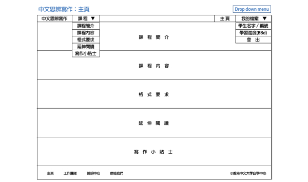
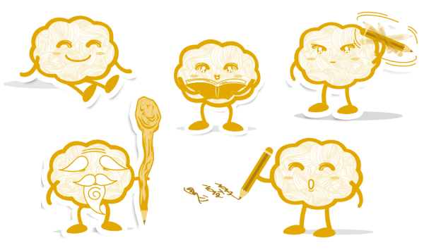
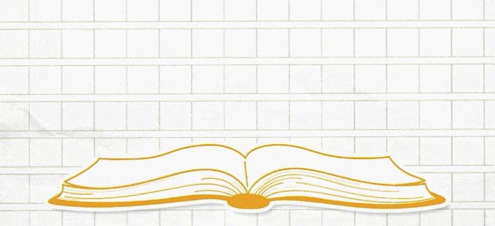
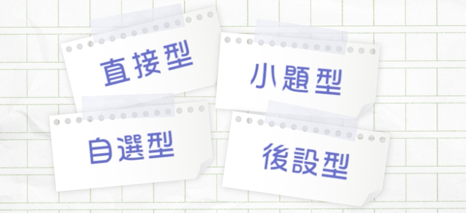
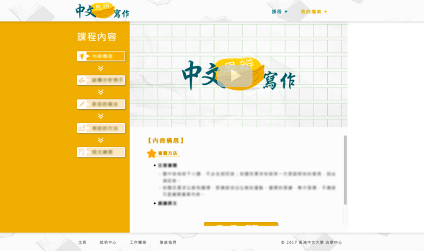
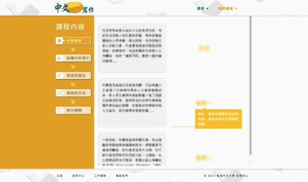
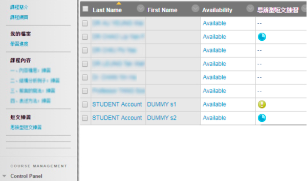

Micro-learning Platform
Front-end web development
UX UI Design
Wireframe
Prototype
Video Production
Independent Learning Center, the Chinese University of Hong Kong
In collaboration with The CUHK General Education Foundation Programmes (UGFH and UGFN), Independent Learning Center has established an online learning platform called GE Chinese Reflective Writing. It is comprised of micro-module, which is a part of micro-learning, focusing on providing knowledge in reflective writing skills with online exercises, videos and follow-up workshops. In this project, my role was front-end web development and collaborated with programmer for login and back-end support.
Visit Website
In the early stage, wireframe and lo-fi prototype are used to clarify conceptual ideas and collect feedbacks from teachers.
In the design process, an energetic and sunny theme colour is used for the web. And a brain-liked walnut character is created and appearing throughout the platform, that could enhance the consistency of the platform.

In addition to web design, video is an important element in micro-learning. Several micro videos are produced for this online learning platform. I have to do some early preparation like studying the scripts, taking notes during the filming process, and design how to present the video content visually.


Back to the platform, the index is designed in one page and with parallax scrolling effect, which could give an overview of the course. So that students could grasp the learning process at the first moment. On the other hand, after researching for different online learning platforms, the content page is designed with a left roadmap menu, right top video section and right bottom content section, which is the best practice of other products.


And the most challenging part of this project is online exercises, and students and teachers have to keep track of their learning progress. Therefore, more time is needed on testing the functionality and usability of the exercises and linkage to the Blackboard. And this has also provided me an opportunity to explore and consolidate knowledge of e-learning technology.

